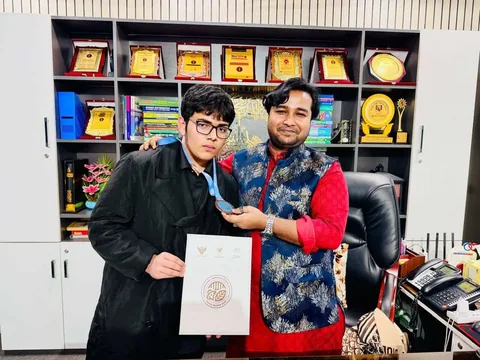

91+ winners and awardees
TEMS students & alumni
More than ninety TEMS students and alumni were recognised as winners or awardees at the Regional Bangladesh Mathematical Olympiad 2026, as reported by the academy.
Source: Regional BdMO 2026
Dhaka · Since 2013 · Classes 3–10
TEMS Academy is an offline olympiad school in Dhaka. Students are placed by ability, not by grade, and trained through weekly problem sets, laboratory work and competition pathways.


Est. 2013Adabor, Dhaka
91+
BdMO winners & awardees
Regional BdMO 2026
2025
IJSO international medal
IJSO 2025 · Russia
2026
APhO Bangladesh team selection
Asian Physics Olympiad 2026
2013
Training Olympiad students in Dhaka
TEMS Academy
What we are
TEMS is a mathematics and science academy in Dhaka. Students come for the problems they have not seen before, and stay for a habit of reasoning that survives the next exam.
Class in school does not decide the tier. A short diagnostic places each student by current ability, and a monthly benchmark keeps that placement honest.
Primary 3–5, Junior 6–8, Secondary 9–10. Gamma, Alpha or Sigma by evidence.
Marked, returned and discussed. The work is the feedback loop.
From regional BdMO to IJSO, IMSO and the international science olympiads.
Find your batch
Class tells us the division. Contest experience helps estimate the tier. The diagnostic makes the final decision.
Your starting point
Choose a class and subject to see a division, tier, session and fee.
The record
Names appear only where the academy supplied them. Every other record says “TEMS student” or “TEMS delegation” rather than guessing.
TEMS students & alumni
More than ninety TEMS students and alumni were recognised as winners or awardees at the Regional Bangladesh Mathematical Olympiad 2026, as reported by the academy.
Source: Regional BdMO 2026
TEMS students
TEMS students were part of Bangladesh’s team selection for the Asian Physics Olympiad 2026.
Source: Asian Physics Olympiad 2026
TEMS student
A TEMS student won an international medal at the International Junior Science Olympiad 2025 in Russia.
Source: IJSO 2025 · Russia
Nabeh
Nabeh became national champion at BDMSO and is photographed with the TEMS Chairman.
Source: BDMSO national round
TEMS delegation
TEMS students represented Bangladesh in an International Mathematics and Science Olympiad delegation.
Source: International Mathematics and Science Olympiad
TEMS students
TEMS students were recognised as national awardees at the Bangladesh Physics Olympiad.
Source: Bangladesh Physics Olympiad
TEMS students
TEMS students were recognised as national awardees at the Bangladesh Mathematical Olympiad.
Source: Bangladesh Mathematical Olympiad
TEMS students
Merit scholarships and cash prizes are awarded separately at the Chairman’s discretion. The academy has not published individual amounts.
Source: TEMS Academy
The method
The work moves from fluency to unfamiliar problems, then to competition and mentorship. Nothing is skipped because an exam is near.
Build the tools
Fluency, careful reading and a first repertoire of methods. Students learn to explain a step before they try to skip it.
Work the set
A weekly problem set is marked and returned with feedback. The problems are unfamiliar on purpose; the method is the lesson.
Extend the range
Multi-step proofs, laboratory work and international-style papers. Students meet problems that combine two or three ideas at once.
Test the training
Preparation follows the national route in each subject — BdMO, BdPhO, BChO, BDBO and BdJSO — and the international competitions they feed.
Pass it on
Mentors include Olympiad medalists and national-team alumni. Older students learn to present a solution, defend it and coach a younger group.
For parents
A clear fee, a written placement, weekly feedback and a benchmark at the end of the month. No surprises buried in a brochure.
Monthly fee
Mathematics · any division, any tier · per month
Science · Physics, Chemistry, Biology and labs · per month
The monthly fee does not change when a student is promoted to a higher tier.
Merit scholarships and cash prizes are awarded separately at the Chairman's discretion.
Fees and admissionsThe first month
The batch, session and fee are confirmed before the student attends.
The mentor sees how the student works, not just what they already know.
Sets are marked and returned. Mistakes are used as teaching material.
The benchmark checks whether the placement still fits. The top quartile may move up; a student who is slipping is re-placed.
Questions parents ask
TEMS runs offline batches for Classes 3–10 at its Dhaka campus, across Primary (3–5), Junior (6–8) and Secondary (9–10) divisions. The application form also accepts Classes 11–12 enquiries, but the academy has not confirmed whether it runs regular batches for those classes. Ask before applying.
House 06, Road 1/1, Shekertek Adabor, Mohammadpur-1207, Dhaka. The map pin is on the Contact page. Message on WhatsApp before visiting so a mentor can be free to meet you.
Mathematics is Tk 2,500 per month at any division and any tier. Science is Tk 2,700 per month and includes Physics, Chemistry, Biology and laboratory work. The fee does not change when a student is promoted.
There is a diagnostic test, but it is not a pass/fail entrance exam. It places the student in the division and tier that fit their current ability. The placement is confirmed in writing before the first class.
Placement ignores the school report. A student who is ready for harder problems is placed in a higher tier, including Sigma. The monthly benchmark then checks whether the tier is still the right fit.
Yes. The top quartile of a batch may be promoted at the monthly review, and a student who is slipping is re-placed rather than left behind. Acceleration can happen at any time when the evidence supports it.
The student sits the diagnostic, receives a written placement, starts the weekly problem sets, and sits the first monthly benchmark at the end of the month. The benchmark decides whether the placement continues or changes.
Yes. TEMS preparation follows the national pathway in each subject and the international competitions that pathway feeds, including BdMO, IJSO, IMSO, IPhO, APhO, IChO and IBO. The Pathway page shows each route with official links.
The campus
House 06, Road 1/1The academy has not yet supplied published office hours. Message on WhatsApp before visiting.
Open in Maps
Inside the academy
Photographs supplied by TEMS Academy and used with permission.


Next step
Send an application or message on WhatsApp. The diagnostic is a placement conversation, not an entrance exam.